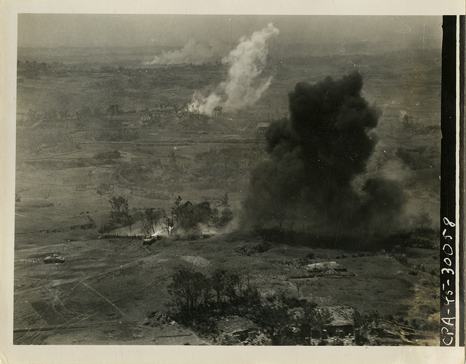

(Approx) 15 May 45. Okinawa. One of the many Japanese dugouts that honeycombed the ridges of Okinawa. In addition to use as storage space, they were used as resting places for personnel. (Signal Corps Photo). Fusco, 3231 Sig. Photo Det.
The “typhoon of bombs and shells,” as the natives called the American explosives, slew and maimed more civilians than the Japanese defenders in the “underground battleships” they had made of their caves.” (Feifer, p.33)
(Aprox) 7 May 1945. Okinawa. The city of Naha, largest on the island of Okinawa (pop 65,000) lies in ruins, the result of heavy and continuous bombings as the U.S. tenth army advances southward toward the city against stiff Jap resistance. A Jap ship rests on the bottom of the shallow water at lower left, while two large buildings, believed to be schools can be seen still standing in upper center and right. (Signal Corps Photo). Rosenthal, 3235 Sig. Photo Det.
Balcony--Looking toward stage Naha opera house. 3223 Sig Photo Det. Photographer: Thompson

View of interior of Naha Opera House thru large hole in back wall. 3223 Sig Photo Det. Photographer: Thompson

Orchestra floor--Looking toward stage--Naha Opera House. 3223 Sig Photo Det. Photographer: Thompson

View from Naha Opera House roof showing Naha ruins--Looking West. 3223 Sig Photo Det. Photographer: Thompson
Balcony--Naha Opera House. 3223 Sig Photo Det. Photographer: Thompson
View from Naha Opera House roof showing Naha ruins--Looking East. 3223 Sig Photo Det. Photographer: Thompson

View from Naha Opera House roof showing Naha ruins--Looking Northwest. 3223 Sig Photo Det. Photographer: Thompson

View from Naha Opera House roof showing Naha ruins--Looking North. 3223 Sig Photo Det. Photographer: Thompson

Exterior view of Naha Opera House. 3223 Sig Photo Det. Photographer: Thompson

View from Naha Opera House roof showing Naha ruins--looking south. 3223 Sig Photo Det. Photographer: Thompson
View from Naha Opera House roof showing Naha ruins--Looking Southeast. 3223 Sig Photo Det. Photographer: Thompson

Naha, Okinawa. Ruins of Christian church, now occupied by 3295 Quartermaster Service Co. (signal Corps Photo). Malashuk, 3925 Sig Photo SV Co.
Okinawa. Med shot scene on Christian church in Naha on Okinawa now occupied by 3295 quartermaster serv co US Army. t/3 Alex Malashuk, Sig Photo Det (Signal Corps Photo)
Okinawa. General view of Military Government Center at Isikawa, showing temporary shelters for civilians. (Signal Corps Photo). Munn, photo Det 28, 3925 Sig Photo SV CO

Okinawa. Atop tower marker on hill looking towards Shuri. T/R Kenneth Adams, 3234 Sig Photo Det (Signal Corps Photo)

Okinawa. Marines viewing Jap temple. T/4 Kenneth Adams, 3234 Sig Photo Det (Signal Corps Photo)
Okinawa. Smoke and flame mark the battle-front in southern sector on Okinawa as XXIV Corps pushes ahead against stiff Jap opposition. Two tanks can be seen here (left foreground), one in the act of burning out a Jap strongpoint with its deadly flame-thrower (Signal Corps Photo). Rosenthal, 3235 Sig Photo Det

Okinawa. Jap searchlight in cave just north of Naha Airfield. Pierce, 3234 Sig Photo Det (Signal Corps Photo)